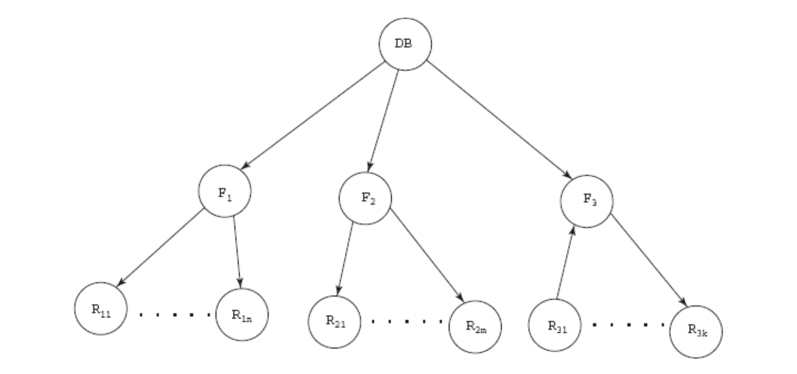
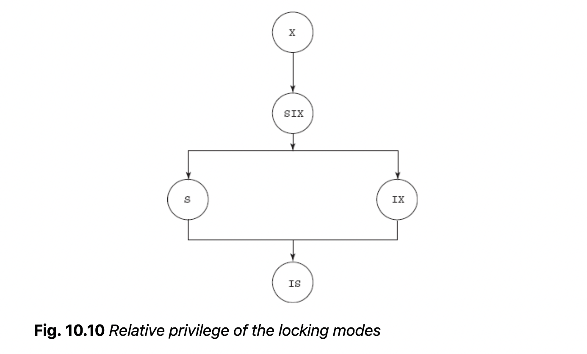
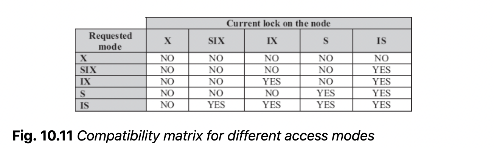
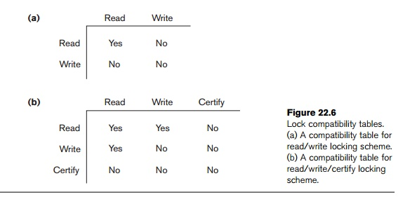

*The need of concurrency control techniques
concurrency control techniques control interactions among current transactions s.t. integrity is conserved by avoiding interference.
lock: variable associated with each data item indicating whether a read/write is allowed. Acquiring the lock by modifying its value is locking.
A lock is a control block containing information about the nature of the locked data and the id of the transaction with the lock.
lock manager: dbms subsystem handling locking/unlocking the data.
Transactions may release lock immediately after final access of a data item, but this may not always be desirable with interleaved execution.
Deadlock – when all transactions in simultaneous wait state as each is waiting for release of data items held by one of the others. More desirable than inconsistent state.
Two phase locking: each transaction divided into a growing phase, where it acquires all needed locks, and a shrinking phase where it releases. * lower degree of concurrency, but forces serializable schedules * rollback and deadlock are still possible * strict two-phase locking: transaction does not release any exclusive locks until commit/abort. prevents cascading rollback
Lock Conversion: transaction changes lock from one mode to another on existing held lock. Allows for more concurrency.
Graph Based Locking: Used when access order is known in advance. * directed, acyclic database graph is formed with data items as nodes and edges denote the need for access prior to another data item. * locks can only be placed if the transaction has locked its parent. * ensures conflict serializability and deadlock freedom * recoverability/cascadelessness not ensured * transaction may have to lock data items it doesn’t need to access
Predicate locking: all tuples, existing or future, that satisfy an arbitrary predicate are locked * prevents phantom tuples, e.g. failing to consider new items * expensive!
Index locking: any transaction inserting a tuple with satisfying a predicate must insert data entry into an index dependent on outside locks.
Concurrency in tree-structured indexes: * two-phase locking results in low concurrency, as index searching starts at the root * crabbing: releasing lock on parent, acquiring child, so on. Possibility of deadlock * B-link tree
knitr::include_graphics("imgs/granularity_tree.png")
One concern is that in a multiple-granularity tree, excessive traversal up and down the node to determine ability to place locks at different tiers requires excessive overhead.
Intention lock: A transaction intends to explicitly lock a lower level of the tree.
Lower level must be explicitly locked in mode requested by transaction. However, this isn’t great if transaction needs to access a small portion of tree. shared and intention-exclusive (SIX) mode explcitily locks sub tree in shared mode, and lower level in exclusive node.
knitr::include_graphics("imgs/lock_heirarchy.png")
knitr::include_graphics("imgs/lock_table.png")
Locking performance is governed by resource contention and data contention.
Resource contention - memory, computing time, etc. determines rate at which transaction executes between lock requests.
data contention – contention over data, eg. number of transactions
Thrashing: the point at which additional transactions decrease throughput, as too many transactions are blocked or locking. Usually occurs when 30% of transactions are blocked.
Timestamps are unique identifiers assigned to transactions in order of appearance that designate priority.
Timestamp ordering is when transactions are ordered by timestamps, equivalent to serial schedule where older transactions appear before younger ones. When timestamp ordering enforced, the order in which the data item is accessed cannot violate serializability order.
read_TS(Q) - read timestamp, youngest timestamp of
transactions that have successfully read Qwrite_TS(Q) - write timestamp, youngest timestamp of
transactions that have successfully written to QBasic timestamp order: transaction Ti executed in timestamp order whenever Ti requests read/write operation.
read_TS(Q) and
write_TS(Q). If timestamp order violated, system rolls back
transaction and restarts with new timestamp.Strict Timestamp Ordering: Basic timestamp ordering + additional read/write constraint to enforce a strict schedule. If Ti requests a read/write on Q and TS(Ti) > write_TS(Q), Ti is delayed until the transaction Tj that wrote Q has committed or aborted.
Thomas’ Write Rule: mod to basic timestamp ordering with different rules for write operations. Assume Ti wants to write on Q
Locking and timestamp ordering are named pessimistic techniques. Require check before executing read/write - can be expensive, especially when most transactions are read-only and conflict rates are low.
Optimistic techniques assume that transactions do not directly update data items until execution is finished – instead, transaction maintain local copies of data items.
Validation(Ti) determines serializability order and is therefore used as the timestamp.
Technique also requires that read_set and write_set of transaction be maintained by system. It requires that modifications made by a younger transactions are not visible to older transactions.
So far, we have enforced serializability by delaying an operation or aborting the requesting transaction. In multiversion, several versions/values of data item are maintained.
For each version of data item Qi, read_TS (youngest timestamp of reading transactions) and write_TS (timestamp of transaction that wrote version) are maintained. For transaction Ti with write_TS(Qi) < TS(Ti):
In MTPL, other transactions can read data items while transaction holds exclusive locking.
knitr::include_graphics("imgs/mtpl.png")
Deadlock: when transactions are in simulataneous wait state for release of data item held by another waiting transactions.
Deadlock prevention ensures deadlock never happens. Usually used when deadlock chance is high:
Conservative 2PL: each transaction locks all data items needed during lifetime
Assigning an order to data items: ordering imposed on data items, transactions acquire locks in that order
Using timestamps + locking: transactions assigned priority determining whether they wait or rollback * most common approach – doesn’t require knowledge of all needed data items or limit concurrency * two different approaches for handling when a transaction asks for lock request on locked item * wait-die: if existing locking T has lower timestamp, keeps waiting; otherwise existing T rolled-back * wound-wait: if existing locking T has lower timestamp; new lock rolled back * may require many rollbacks! * both techniques avoid starvation, but may invoke unnecessary rollbacks may occur
If there’s little chance of interference among transactions, plus transactions are short and require few locks, use deadlock detection/recovery techniques.
Use wait-for graph to detect deadlocks, with nodes of transactions and edges of waiting for another.
Interval of invoking deadlock detection algorithm depends on balance between overhead and deadlock detection